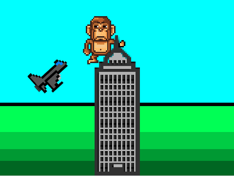
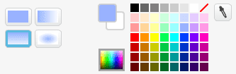
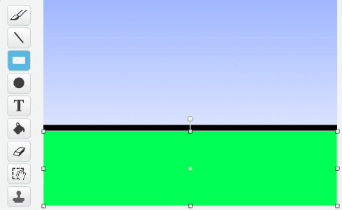
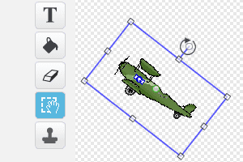

I dette spillet inspirert av historien om King Kong, skal vi se hvor
lett det er å bruke grafikk som ikke allerede ligger i
Scratch-biblioteket. I spillet styrer vi King Kong som må passe seg
for flyene som angriper ham.

Steg 1: Hente grafikk fra nettet
Vi skal først se på hvordan vi kan hente bilder og figurer fra nettet
og bruke dem i våre egne spill. Til dette spillet trenger vi en
skyskraper, et fly og en gorilla.
Sjekkliste
Åpne en ny fane i nettleseren din og gjør et søk, for eksempel etter
skyscraper icon. Velg gjerne Bildesøk eller lignende for å bare
se søkeresultatene som er bilder.
Finn en skyskraper som du liker. Velg deretter Se bildet for å
få bildet i full størrelse. Høyreklikk på bildet og velg Lagre
bildet som og lagre det på din datamaskin et sted du finner det
igjen.
Tips for søking
Når du søker etter bilder er det best å søke på engelsk fordi det er
det mest brukte språket på internett.
For å finne grafikk i stedet for bilder kan det være lurt å ta med
ord som icon, pixel eller drawing i søket ditt.
De fleste søkemotorene har også muligheten for å gjøre avansert
bildesøk. Da kan du som regel begrense søket til å bare lete etter
tegninger eller tilsvarende.
Sjekkliste
Søk også opp figurer for fly og King Kong.
Her er noen eksempler, men bruk gjerne bilder du finner selv:
Etter at du har lastet ned bildene fra nettet er det på tide å ta
dem inn som nye figurer i Scratch. Gå tilbake til Scratch. Klikk på
ved siden av
Ny figur og velg et av bildene du har lastet ned. Gjør det samme
med de andre bildene, slik at du har tre figurer, en skyskraper, et
fly og en King Kong-figur.
Figurene får navn fra bildefilene. Endre gjerne navnet på figurene i
figurlisten til skyskraper, fly og kong slik at det blir
enklere å holde oversikten.
Hvilke bilder kan du bruke?
Når du henter bilder fra nettet bør du sjekke at du har tillatelse til
å bruke dem. Selv om bilder ligger på Internett betyr ikke det at du
kan kopiere dem og bruke de som du selv vil!
Mange bilder har en lisens som sier at andre kan bruke dem. Dette
står ofte på nettsiden i nærheten av bildet (på samme måte som det
står Lisens nederst i denne oppgaven). Vanligvis vil de som eier
bildet at du forteller at du har kopiert bildet fra dem. Dette er
veldig lett i Scratch, da man kan skrive hvor bildene kommer fra på
Prosjektsiden under Merknader og Bidragsytere.
Steg 2: Tegn litt selv
Like morsomt som å finne bilder på nettet er det å tegne litt selv.
Sjekkliste
La oss først tegne en enkel bakgrunn. Klikk på
ved Ny bakgrunn
nederst til venstre.
Velg Malingsbøtte-verktøyet (Fyll med farge) for å fargelegge
bakgrunnen. Finn et par fine himmelfarger, for eksempel en overgang
fra blå øverst til noe lysere nederst. Klikk på bakgrunnen slik at
den blir fargelagt.

For en litt enkel gresseffekt skal vi nå velge
Rektangel-verktøyet, og en helt svart farge. Tegn et svart
rektangel på den nederste delen av bakgrunnen.
Velg så en ganske lys grønn farge og tegn et grønt rektangel som
dekker det meste av det svarte rektangelet, slik at det blir en
svart strek mellom gresset og himmelen.

Velg deretter en litt mørkere grønn farge, og tegn et nytt grønt
rektangel som dekker den nedre delen av det forrige
rektangelet. Gjenta dette med stadig mørkere grønnfarger til du har
et passende antall striper som forestiller gresset. Se
øverst i oppgaven for et ferdig eksempel.
Du kan også tegne litt på figurene du har lastet ned. For eksempel,
om du lastet ned skyskraperen fra lenken over er den gjennomsiktig!
Det ser litt rart ut. Det blir bedre om du velger en farge og
fargelegger skyskraperen!
Til spillet vårt vil vi behøve to drakter til King Kong. En drakt
der han står på venstre side av skyskraperen og en der han står på
høyre side.
Klikk på kong-figuren og velg Drakter-fanen. Høyreklikk på
kong-drakten og velg Lag en kopi.
Klikk på kopien og bruk knappen i øverste høyre hjørne til å speilvende denne nye drakten.
Gi de to draktene navnene Høyre og Venstre.
Utforsk tegneverktøyene
Prøv gjerne de forskjellige tegneverktøyene på egen hånd. Vet du hva
alle gjør?
Legg merke til at nede i høyre hjørnet velger du mellom å jobbe med
punktgrafikk og vektorgrafikk. I punktgrafikk jobber vi med nettopp
punktene (også kalt pikslene) i bildet. Typisk vil du gjøre dette med bilder du
laster ned fra nettet. Med vektorgrafikk kan vi jobbe med direkte med linjer og
former. Mange av figurene i Scratchbiblioteket bruker dette, og det er ofte
bedre når vi skal tegne selv.
Steg 3: King Kong flytter seg
Nå har vi tatt inn grafikken vi trenger. Det er på tide å begynne å
programmere!
Sjekkliste
La oss begynne med skyskraper-figuren. Denne er ganske enkel. Vi
vil bare passe på at den står i ro midt på skjermen i en passende
størrelse. Det kan vi gjøre med et skript som ligner dette:
når grønt flagg klikkes
sett størrelse til (200) %
legg øverst
gå til x: (0) y: (-50)
Du må eksperimentere litt med tallene slik at de passer til din
skyskrapergrafikk.
Neste steg er King Kong. Vi vil at han skal stå på skyskraperen,
og at vi kan flytte ham fra høyre til venstre side og tilbake igjen
med piltastene. Dette er heller ikke så veldig vanskelig. Du må
sikkert forandre litt på tallene, men et lite skript som ser omtrent
slik ut gjør jobben:
når grønt flagg klikkes
gå til x: (-45) y: (30)
bytt drakt til [venstre v]
for alltid
hvis (tast [pil venstre v] trykket?)
gli (0.2) sekunder til x: (-45) y: (30)
bytt drakt til [venstre v]
slutt
hvis (tast [pil høyre v] trykket?)
gli (0.2) sekunder til x: (45) y: (30)
bytt drakt til [høyre v]
slutt
slutt
Test prosjektet
Klikk på det grønne flagget.
Er kong og skyskraperen bra plassert i forhold til hverandre?
Flytter King Kong seg slik han skal når du trykker på piltastene?
Endre på figurene og skriptene slik at det ser bra ut!
Steg 4: Flyene flyr
Nå skal vi kopiere flyet vårt slik at vi har mange fly som flyr rundt
skyskraperen.
Sjekkliste
For å kopiere det ene flyet skal vi bruke det som kalles kloning for
å lage nye fly med ujevne mellomrom. Lag først et skript som stadig
lager nye fly:
når grønt flagg klikkes
skjul
begrens rotasjon [vend sideveis v]
for alltid
vent (tilfeldig tall fra (0.5) til (4)) sekunder
lag klon av [meg v]
slutt
Om du kjører spillet ditt skjer det ikke noe spennende enda, fordi
vi ikke har sagt hva alle flyklonene skal gjøre. La oss begynne med
å la dem fly skrått over skjermen:
når jeg starter som klon
pek i retning (45 v)
gå til x: (-280) y: (-140)
vis
gjenta til ((y-posisjon) > (190))
gå (10) steg
slutt
slett denne klonen
Igjen må du justere tallene slik at de passer for deg. Vi vil at
flyet skal fly slik at det kommer borti kong om han står på
venstre side av skyskraperen, men vi vil ikke at flyet krasjer i
skyskraperen selv (se bildet øverst i oppgaven).
Om du vil kan du klikke på drakter og rotere flyet litt slik at det
flyr i riktig retning.

Vi kan også få flyene til å komme fra begge retninger! Ved å bruke
et tilfeldig tall kan vi bestemme om flyet kommer fra høyre eller
venstre. Endre koden din slik at den blir som følger:
når jeg starter som klon
hvis ((tilfeldig tall fra (1) til (2)) = (1))
pek i retning (45 v)
gå til x: (-280) y: (-140)
ellers
pek i retning (-45 v)
gå til x: (280) y: (-140)
slutt
vis
gjenta til ((y-posisjon) > (190))
gå (10) steg
slutt
slett denne klonen
Steg 5: King Kong må passe seg
Oppgaven til King Kong er å passe seg slik at han ikke blir
truffet av flyene.
Sjekkliste
For at kong skal merke at han blir truffet av flyene lager vi et
nytt skript på ham. Et enkelt utgangspunkt kan være:
når grønt flagg klikkes
for alltid
vent til (berører [fly v] ?)
endre [farge v] effekt med (25)
vent (0.5) sekunder
ta bort grafiske effekter
slutt
Her venter vi 0.5 sekunder både for at fargeeffekten skal synes og
for at da har flyet passert slik at ikke King Kong blir truffet
flere ganger av det samme flyet.
Vi har nå laget et ganske enkelt spill. Men det er flere ting du kan
prøve på egen hånd! Nedenfor er noen forslag, men du har kanskje egne
ideer til hvordan spillet kan videreutvikles?
Prøv selv
Legg til lydeffekter! Kanskje litt motorlyd fra flyene, og så klart
trenger vi en lyd når King Kong blir truffet av flyene.
Tell poeng! Kanskje du kan få poeng for hvert fly som passerer?
Tell liv! King Kong kan ikke bli truffet av flyene for alltid. Legg til en liv-variabel som
teller hvor mange liv du har igjen. Kanskje kong ramler ned fra
skyskraperen når han er tom for liv?
Kan du utvide spillet? Kanskje kommer det fly i flere retninger og
King Kong må dukke eller hoppe for å unngå dem? Kanskje King Kong
kan fange flyene på en eller annen måte og få poeng for det?
Kan du gjøre spillet vanskeligere etterhvert? For eksempel kan
flyene komme raskere etterhvert som du får flere poeng?
Forbedre denne siden
Funnet en feil? Kunne noe vært bedre? Hvis ja, vennligst gi oss tilbakemelding ved å lage en sak på Github eller fiks feilen selv om du kan. Vi er takknemlige for enhver tilbakemelding!

 ved siden av
Ny figur og velg et av bildene du har lastet ned. Gjør det samme
med de andre bildene, slik at du har tre figurer, en skyskraper, et
fly og en King Kong-figur.
ved siden av
Ny figur og velg et av bildene du har lastet ned. Gjør det samme
med de andre bildene, slik at du har tre figurer, en skyskraper, et
fly og en King Kong-figur. ved Ny bakgrunn
nederst til venstre.
ved Ny bakgrunn
nederst til venstre.